▭ 工事別
ダクト
長方形ダクト（アングルフランジ・コーナーボルト）、スパイラルダクト、排煙ダクト、吊り・支持・接合・附属品。
早見表
主要な数値・ルールの要約です。根拠欄の「2-2.4.6(2)」は「第2編 2.4.6 (2)」を表します。
| 項目 | 規定 | 根拠 |
|---|---|---|
| ダクト区分（常用圧力） | 低圧：+500Pa以下／−500Pa以内、高圧1：+500超〜+1,000以下／−500超〜−1,000以内、高圧2：+1,000超〜+2,500以下／−1,000超〜−2,000以内 | 3-1.14.1 表3.1.13 |
| 材質 | 空調・換気ダクトは亜鉛鉄板製（Z18以上）。排煙は亜鉛鉄板製又は1.5mm以上の鋼板製で特記（特記なければ亜鉛鉄板） | 3-1.14.1(2)(3), 1.14.2.1 |
| 曲がり内側半径 | 長方形：半径方向の幅の1/2以上（不足時は案内羽根）、スパイラル：その半径以上 | 3-1.14.1(5) |
| 断面変形の角度 | 拡大15°以下・縮小30°以下（コイル・フィルター等がある場合 拡大30°以下・縮小45°以下） | 3-1.14.1(6) |
| 縦横比 | 原則 4 以下 | 3-1.14.3.3 |
| コーナーボルト工法 | 長辺1,500mm以下に適用。共板フランジ工法又はスライドオンフランジ工法（特記） | 3-1.14.3.2 |
| 低圧ダクト最小板厚 | 長辺 450以下:0.5 ／ 〜750:0.6 ／ 〜1,500:0.8 ／ 〜2,200:1.0 ／ 2,200超:1.2（mm） | 3-1.14.3.5 表3.1.14 |
| 高圧1・2最小板厚 | 長辺 450以下:0.8 ／ 〜1,200:1.0 ／ 1,200超:1.2（mm） | 3-1.14.3.5 表3.1.15 |
| フランジ最大間隔 | アングルフランジ 1,820mm ／ 共板 1,750mm ／ スライドオン 1,840mm ／ スパイラルのフランジ継手 4,000mm | 3-1.14.3.6, 1.14.4.2 |
| アングルフランジ接合材 | 長辺750以下 L25×25×3、〜1,500 L30×30×3、〜2,200 L40×40×3、2,200超 L40×40×5。リベット4.5φ@65以下、ボルトM8@100以下 | 3-1.14.3.6 表3.1.16 |
| 補強リブ | 保温しないダクトで幅又は高さ450mm超は、300mm以下ピッチで補強リブ | 3-1.14.3.7(1) |
| スパイラル板厚（低圧） | 呼称 450以下:0.5 ／ 〜710:0.6 ／ 〜1,000:0.8 ／ 〜1,250:1.0（mm） | 3-1.14.4.1 表3.1.23 |
| スパイラル差込み長さ | 60mm以上。接合はビス固定＋全周シール材＋ダクト用テープ二重巻き | 3-1.14.4.2 表3.1.27, 3-2.2.3.2(2) |
| 吊り間隔 | アングルフランジ 3,640mm以下 ／ スライドオン 3,000mm以下 ／ 共板 2,000mm以下 ／ スパイラル 4,000mm以下 ／ 円形 3,640mm以下 | 3-2.2.2.2〜2.2.2.4 |
| 形鋼振れ止め（横走り） | 12m以下ごと＋末端部。周長1,000mm以内又は吊りボルト平均200mm以内の場合は除く | 3-2.2.2.1(2) |
| 立てダクト | 各階1箇所以上 振れ止め支持（固定） | 3-2.2.2.1(3) |
| 吊りボルト | M10 又は呼び径9（周長3,000mm超は強度確認） | 3-2.2.2.2 表3.2.2 |
| フレキシブルダクト | 吹出口・吸込口ボックスの接続用として1.5m以下。湾曲部内側半径はダクト半径以上 | 3-2.2.5.3 |
| 多湿箇所の排気 | 厨房・浴室等の多湿箇所の排気用長方形ダクトは Nシール＋Aシール＋Bシール | 3-2.2.1(3) |
| 防火区画貫通 | 隙間はモルタル又はロックウール保温材で充塡。保温が必要なダクトの貫通部はロックウール | 3-2.2.1(1) |
| 保温の厚さ（保温Ⅺ） | 屋内露出（機械室・書庫・倉庫）及び隠ぺい部 25mm ／ 屋内露出（一般居室・廊下）・多湿箇所・屋外露出 50mm | 2-3.1.6 表2.3.7 |
| フランジ部の保温 | 厚さ25mmの重ね巻き、又は保温厚さをフランジ高さ+10mm以上（送風温度14℃以上の場合） | 2-3.1.4.1 表2.3.2 注2 |
標準仕様書 条文
第3編 空気調和設備工事
1.14.1一般事項第3編

(1) ダクトは、使用圧力により、低圧ダクト、高圧１ダクト及び高圧２ダクトに区分し、その適用範囲は、表 3.1.13 による。
表3.1.13 ダクトの区分 （単位 Pa）
常 用 圧 力
ダクト区分
正 圧 負 圧
低圧ダクト ＋500以下 －500以内
高圧１ダクト ＋500を超え －500を超え
＋1,000以下 －1,000以内
高圧２ダクト ＋1,000を超え －1,000を超え
＋2,500以下 －2,000以内
注 常用圧力とは、通常の運転時におけるダクト内圧をいう。
(2) 空気調和設備及び換気設備に使用するダクト（空調ダクト及び換気ダクト）は、亜鉛鉄板製とする。
(3) 排煙設備に使用するダクト（排煙ダクト）は、亜鉛鉄板製又は 1.5mm 以上の鋼板製とし、特記による。
なお、特記がなければ、亜鉛鉄板製とする。
(4) ダクトは、空気の通風抵抗、漏れ量、騒音及び振動が少なく、かつ、ダクトの内外差圧により変形を起さない構造とする。
(5) ダクトの湾曲部の内側半径は、次による。
(ｱ) 長方形ダクトの場合は、半径方向の幅の 1/2 以上とする。ただし、1/2 以上とれないときは、必要に応じてダクト内部に案内羽根を設ける。
(ｲ) スパイラルダクトの場合は、その半径以上とする。
(6) ダクトの断面を変形させるときは、その傾斜角度は、拡大部は 15 ﾟ以下、縮小部は 30 ﾟ以下とする。ただし、ダクト途中にコイル、フィルター等がある場合は、拡大部は 30 ﾟ以下、縮小部は 45 ﾟ以下とし、やむを得ず傾斜角度を超える場合は、ダクト内部に整流板を設ける。
※表の罫線はテキスト化で崩れます。数値は必ず原本ページ画像で確認してください。
1.14.2ダクト用材料第3編

1.14.2.1 亜鉛鉄板
(1) めっきの付着量は、JIS G 3302「溶融亜鉛めっき鋼板及び鋼帯」の Z18 以上とする。溶接加工を施した場合は、両面に第２編 3.2.2.7「有機質亜鉛末塗料」による防錆処理を施すものとする。
1.14.2.2 鋼材
(1) 接合用フランジ及び補強に用いる鋼材は、形鋼（山形鋼）とし、第２編 3.2.1.4「塗装箇所の塗料の種別及び塗り回数」によるさび止めペイントを施したものとする。
1.14.2.3 リベット
(1) リベットは、JIS B 1213「冷間成形リベット」の銅リベット又は鋼リベットによるものとし、鋼リベットは、亜鉛めっきを施したものとする。
1.14.2.4 ボルト及びナット
(1) ボルト及びナットは、JIS B 1180「六角ボルト」及び JIS B 1181「六角ナット」によるものとし、亜鉛めっきを施したものとする。
1.14.2.5 ダクト用テープ
(1) ダクト用テープは、JIS H 4160「アルミニウム及びアルミニウム合金はく」に準ずるアルミニウム箔の片面に樹脂系粘着剤を塗布したテープ状のものとする。
1.14.2.6 シール材
(1) シール材は、シリコンゴム系又はニトリルゴム系を基材としたものとし、ダクトの材質に悪影響を与えないものとする。
1.14.2.7 雑材料
(1) 吊り金物に用いる鋼材は、形鋼（山形鋼）及び棒鋼を転造ねじ加工した吊り用ボルトとする。また、形鋼は、第２編 3.2.1「塗装」による塗装を施したものとし、吊り用ボルトは、亜鉛めっきを施したものとする。
(2) インサート金物は、防錆処理を施したものとし、標準図（形鋼振れ止め支持部材選定表（二））による。
なお、断熱インサート金物は、インサート金物の台座に断熱材の厚さに等しい長さのさや管を有するものとする。
(3) 支持金物は、第２編第４章第６節「鋼材工事」による。
※表の罫線はテキスト化で崩れます。数値は必ず原本ページ画像で確認してください。
1.14.3長方形ダクト第3編


1.14.3.1 ダクトの区分
(1) 長方形ダクトは、アングルフランジ工法ダクト又はコーナーボルト工法ダクトとし、適用は特記による。
1.14.3.2 コーナーボルト工法ダクト
(1) コーナーボルト工法ダクトは、長辺が 1,500mm 以下のダクトに適用する。
(2) コーナーボルト工法ダクトは、共板フランジ工法又はスライドオンフランジ工法とし、適用は特記による。
1.14.3.3 縦横比
(1) 長方形ダクトの縦横比は、原則として、４以下とする。
1.14.3.4 継目
(1) ダクトの継目の形状等は、標準図（ダクトの継手､継目及び分岐方法）による。
(2) ダクトのかどの継目は、２箇所以上とする。ただし、長辺が 750mm 以下の場合は、１箇所以上とし、ピッツバーグはぜ又はボタンパンチスナップはぜによるものとする。
(3) ダクトの面の継目は、原則として、気流に直角方向のみとし、内部甲はぜ継ぎ又は突合せ溶接し平滑に仕上げたものとする。
1.14.3.5 板厚
(1) 低圧ダクト、高圧１ダクト及び高圧２ダクトの板厚は、表 3.1.14 及び表 3.1.15 による。
ただし、ダクト両端の寸法が異なる場合は、その最大寸法による板厚を適用する。
なお、厨房用排気ダクトの板厚は特記による。
表 3.1.14 低圧ダクトの最小板厚 （単位 mm）
ダ ク ト の 長 辺 適用表示厚さ
450以下 0.5
450を超え、 750以下 0.6
750を超え、1,500以下 0.8
1,500を超え、2,200以下 1.0
2,200を超えるもの 1.2
表 3.1.15 高圧１及び高圧２ダクトの最小板厚 （単位 mm）
ダ ク ト の 長 辺 適用表示厚さ
450以下 0.8
450を超え、1,200以下 1.0
1,200を超えるもの 1.2
1.14.3.6 接合材料
(1) アングルフランジ工法ダクト
(ｱ) 接合材料は、表 3.1.16 による。
(ｲ) フランジの最大間隔は、1,820mm とする。
(ｳ) フランジは、山形鋼を溶接加工したものとし、接触面を平滑に仕上げ、ボルト穴を開けたものとする。
(ｴ) フランジの取付方法は、リベットに替えてスポット溶接としてもよい。ただし、スポット溶接の間隔は、リベットの間隔による。
(ｵ) フランジ部のダクト端の折り返しは５mm 以上とする。
表3.1.16 接合材料 （単位 mm）
フランジ取付け用
接合用フランジ 接合用ボルト
リベット
ダ ク ト の 長 辺
山形鋼 最 小 リベット 最小呼び 最大間隔
最小寸法 呼び径 最大間隔 径 ｺｰﾅｰ 中央
750以下 25×25×3 4.5 65 M8 100 100
750を超え、1,500以下 30×30×3 4.5 65 M8 100 100
1,500を超え、2,200以下 40×40×3 4.5 65 M8 100 100
2,200を超えるもの 40×40×5 4.5 65 M8 100 100
注 ボルトの最大間隔の中央とは、コーナー以外の場所とする。
(2) 共板フランジ工法ダクト
(ｱ) 接合材料は、表 3.1.17 による。
(ｲ) フランジの最大間隔は、1,750mm とする。
(ｳ) フランジ押さえ金具及びコーナー金具は、亜鉛鉄板製とする。
(ｴ) フランジの板厚は、ダクトの板厚と同じとする。
(ｵ) フランジ押さえ金具の再使用は禁止する。
(ｶ) フランジ押さえ金具の長さは、150mm 以上とする。
表 3.1.17 接合材料 （単位 mm）
共板フランジ最小寸法 コーナー金具 フランジ押さえ
ダ ク ト の 長 辺
高さ 幅 最小板厚 金具最小板厚
450以下 低圧ダクト 30 9.5 1.2 0.8
450を超え、 750以下 低圧ダクト 30 9.5 1.2 0.8
750を超え、1,200以下 低圧ダクト 30 9.5 1.2 1.0
1,200を超え、1,500以下 低圧ダクト 30 9.5 1.6 1.0
(3) スライドオンフランジ工法ダクト
(ｱ) 接合材料は、表 3.1.18 による。
(ｲ) フランジの最大間隔は、1,840mm とする。
(ｳ) フランジ押さえ金具及びコーナー金具は、亜鉛鉄板製とする。
(ｴ) フランジ押さえ金具の厚さは、4.0mm 以上とする。
表 3.1.18 接合材料 （単位 mm）
スライドオンフランジ最小寸法 コーナー金具
ダ ク ト の 長 辺
高さ 板厚 最小板厚 ボルト呼び径
450以下 低圧ダクト 19 0.6 2.0 M8
450を超え、 750以下 低圧ダクト 20 0.9 2.3 M8
750を超え、1,500以下 低圧ダクト 20 0.9 2.3 M8
1.14.3.7 ダクトの補強
(1) 保温を施さないダクトが、幅又は高さが 450mm を超える場合は、間隔 300mm 以下のピッチで、補強リブによる補強を行う。
(2) ダクトの形鋼補強の取付要領は、標準図（ダクトの継手､継目及び分岐方法）による。
(3) ダクトは、次による形鋼補強を行うものとする。
なお、山形鋼取付用リベットは、リベットと同じ間隔のスポット溶接としてもよい。
(ｱ) アングルフランジ工法ダクトの横方向の補強は、フランジ間隔が、表 3.1.19 及び表3.1.20 の最大間隔を超える場合に行う。
なお、横方向の補強を行ったダクトの長辺が 1,500mm を超える場合は、表 3.1.21 による縦方向の補強を行う。
表 3.1.19 ダクトの横方向の補強(低圧) （単位 mm）
山形鋼取付用
リベット
ダ ク ト の 長 辺 山形鋼最小寸法 最大間隔
最 小 リベットの
呼び径 最大間隔
750を超え、1,200以下 30×30×3 1,210 4.5 100
1,200を超え、1,500以下 30×30×3 925 4.5 100
1,500を超え、2,200以下 40×40×3 925 4.5 100
2,200を超えるもの 40×40×5 925 4.5 100
表 3.1.20 ダクトの横方向の補強(高圧) （単位 mm）
山形鋼取付用
リベット
ダ ク ト の 長 辺 山形鋼最小寸法 最大間隔
最 小 リベットの
呼び径 最大間隔
250を超え、 750以下 25×25×3 925 4.5 100
750を超え、1,500以下 30×30×3 925 4.5 100
1,500を超え、2,200以下 40×40×3 925 4.5 100
2,200を超えるもの 40×40×5 925 4.5 100
表 3.1.21 ダクトの縦方向の補強 （単位 mm）
山形鋼取付け用
リベット
ダ ク ト の 長 辺 山形鋼最小寸法 取付け箇所
最 小 リべットの最
呼び径 大間隔
1,500を超え、2,200以下 40×40×3 中央に１箇所 4.5 100
2,200を超えるもの 40×40×5 中央に２箇所 4.5 100
注 高圧１及び高圧２ダクトの場合は、1,500を1,200に読み替える。
(ｲ) コーナーボルト工法のダクトの横方向の補強は、フランジ間隔が、表 3.1.22 の最大間隔を超える場合に行う。
表 3.1.22 ダクトの横方向の補強(低圧) （単位 mm）
山形鋼取付用
リベット
ダ ク ト の 長 辺 山形鋼寸法 最大間隔
最 小 リベットの
呼び径 最大間隔
450を超え、 750以下 25×25×3 1,840 4.5 100
750を超え、 900以下 30×30×3 1,230 4.5 100
900を超え、1,500以下 30×30×3 925 4.5 100※表の罫線はテキスト化で崩れます。数値は必ず原本ページ画像で確認してください。
1.14.4スパイラルダクト第3編


1.14.4.1 直管
(1) 亜鉛鉄板を、スパイラル状に甲はぜ掛け機械巻きしたもので、その呼称寸法は内径基準とし、内径の公差は呼称寸法に対し０～＋２mm とする。スパイラルダクトの板厚及びはぜのピッチは、表 3.1.23 及び表 3.1.24 による。
表 3.1.23 直管の板厚 （単位 mm）
呼 称 寸 法
適用表示厚さ
低圧ダクト 高圧１ダクト、高圧２ダクト
0.5 450以下 200以下
0.6 450を超え、 710以下 200を超え、 560以下
0.8 710を超え、1,000以下 560を超え、 800以下
1.0 1,000を超え、1,250以下 800を超え、1,000以下
1.2 － 1,000を超え、1,250以下
表 3.1.24 はぜのピッチ （単位 mm）
呼 称 寸 法 は ぜ の ピ ッ チ
100以下 125以下
100を超え、1,250以下 150以下
注 はぜ折りの幅は、4.0mm以上とする。
1.14.4.2 接合材料
(1) 差込み継手接合
(ｱ) 継手は、亜鉛鉄板をはぜ継ぎ又は溶接加工したものとする。
(ｲ) 継手の呼称寸法は外径基準とし、その公差は表 3.1.25 による。
(ｳ) 継手の板厚及び差込み長さは、表 3.1.26 及び表 3.1.27 による。
表3.1.25 継手の外径公差 （単位 mm）
呼 称 寸 法 公 差
710未満 -1.2 ～ -1.9
710以上、1,250以下 -2.0 ～ -2.2
表 3.1.26 継手の板厚 （単位 mm）
適用表示厚さ 呼称寸法
0.6 315以下
0.8 315を超え、 710以下
1.0 710を超え、1,000以下
1.2 1,000を超え、1,250以下
表 3.1.27 継手の差込み長さ （単位 mm）
呼 称 寸 法 長 さ
315以下 60以上
315を超え、 800以下 60以上
800を超え、1,250以下 60以上
(2) フランジ継手接合
(ｱ) 接合材料は表 3.1.28 とする。
(ｲ) フランジの最大間隔は、4,000mm とする。
(ｳ) フランジは、山形鋼を溶接加工したものとし、接触面を平滑に仕上げ、ボルト穴を開けたものとする。
(ｴ) フランジ用カラーは、つば部の外径が差込部の外径より 15mm 以上大きなものとし、板厚は接続するダクトより１番手厚く、差込み長さ 100mm 以上のものとする。
なお、フランジ用カラーのダクトとボルトの組合せは、表 3.1.28 による。
表3.1.28 接合材料 （単位 mm）
フランジ取付け用
接合用フランジ 接合用ボルト
リベット
呼 称 寸 法
山形鋼 リベットの最
最小呼び径 最小呼び径 最大間隔
最小寸法 大間隔
710以下 25×25×3 4.5 65 M8 100
710を超え、1,000以下 30×30×3 4.5 65 M8 100
1,000を超え、1,250以下 40×40×3 4.5 65 M8 100※表の罫線はテキスト化で崩れます。数値は必ず原本ページ画像で確認してください。
1.14.5排煙ダクト第3編

(1) 亜鉛鉄板製の場合は、次による。
(ｱ) 長方形ダクトは、アングルフランジ工法による高圧１ダクト又は高圧２ダクトとし、1.14.3「長方形ダクト」の当該事項による。ただし、ダクトのかどの継目はピッツバーグはぜとする。
(ｲ) 円形ダクトは、表 3.1.29、表 3.1.30 及び表 3.1.31 による。
なお、板の継目は内部甲はぜ継ぎとし、フランジの最大間隔は、1,820mm とする。
表 3.1.29 板厚（高圧１ダクト，高圧２ダクト） （単位 mm）
ダ ク ト の 直 径 適用表示
直 管 継 手 厚 さ
450以下 － 0.8
450を超え、700以下 450以下 1.0
700を超えるもの 450を超えるもの 1.2
表 3.1.30 接合材料 （単位 mm）
フランジ取付け用
接合用フランジ 接合用ボルト
リベット
ダ ク ト の 直 径
山形鋼 リベットの
最小呼び径 最小呼び径 最大間隔
最小寸法 最大間隔
450以下 30×30×3 4.5 65 M8 100
450を超え、700以下 40×40×3 4.5 65 M8 100
700を超えるもの 40×40×5 4.5 65 M8 100
表 3.1.31 排煙ダクト（円形）の補強 （単位 mm）
山形鋼 山形鋼取付け用リベット
ダクトの直径 最大間隔
最小寸法 最小呼び径 リベットの最大間隔
450以下 30×30×3 910 4.5 100
450を超え、700以下 40×40×3 910 4.5 100
700を超えるもの 40×40×5 910 4.5 100
(2) 鋼板製の場合は、(1)の当該事項によるほか、次による。
(ｱ) 板の継目は、溶接とする。
(ｲ) ダクトの接続は、フランジ接合とし、その最大間隔は 3,640mm とする。
(ｳ) 接合用フランジは、山形鋼（40×40×5）を溶接加工したものとし、接触面を平滑に仕上げ、ボルト穴を開けたものとする。
(ｴ) ダクトの補強及び支持金物は、山形鋼（40×40×5）によるものとし、その取付け間隔は 1,820mm 以下とする。
(ｵ) フランジ及び補強形鋼の取付けは、溶接としてもよい。
※表の罫線はテキスト化で崩れます。数値は必ず原本ページ画像で確認してください。
1.14.6チャンバー第3編

(1) チャンバーは、空気調和機、送風機、外壁ガラリ等とダクトとの接続又はダクトの分岐に用いるもので、形状は、箱形とする。チャンバーは、1.14.3「長方形ダクト」のアングルフランジ工法ダクトの当該事項によるものとし、板厚は、３辺の最大寸法をダクトの長辺と読み替えて決定する。
なお、消音内貼を施す場合は特記による。
(2) ユニット形空気調和機、コンパクト形空気調和機、パッケージ形空気調和機及びガスエンジンヒートポンプ式空気調和機に用いるサプライチャンバー及びレタンチャンバーは、点検口及び温度計取付座を有する構造とする。
(3) 使用材料は、1.14.2「ダクト用材料」の当該事項による。
※表の罫線はテキスト化で崩れます。数値は必ず原本ページ画像で確認してください。
1.14.7吹出口及び吸込口ボックス第3編
(1) 吹出口及び吸込口ボックスは、吹出口又は吸込口とダクトとの接続に用いるもので、形状は箱形とする。
(2) ボックスは、亜鉛鉄板製又はグラスウール製とし、特記による。
なお、特記がない場合は、亜鉛鉄板製とする。
(3) 亜鉛鉄板製の場合は、1.14.2「ダクト用材料」の当該事項による。
なお、線状吹出口ボックスの板厚は、ボックスの高さを基準にして選定する。
(4) グラスウール製の場合は、JIS A 4009「空気調和及び換気設備用ダクトの構成部材」によるものとし、厚さ 0.6mm 以上の亜鉛鉄板で補強を施したものとする。
なお、補強方法は、標準図（吹出口及び吸込口ボックスの例）による。
※表の罫線はテキスト化で崩れます。数値は必ず原本ページ画像で確認してください。
1.14.8排気フード第3編
(1) 排気フードは、厚さ 1.0mm 以上のステンレス鋼板（SUS430 又は SUS304）を溶接加工したもので、フード囲いを設けた二重構造とする。また、必要に応じて補強を施したものとする。
(2) フード囲いに、ダンパー類の点検口を設ける場合は、特記による。
(3) フードの下部には、50mm 以上の垂れ下がり部を設け、集気部分の傾斜角度は、水平面に対し 10 ﾟ以上とする。
(4) フードの内側周囲には、といを設け、フード内の凝縮水等を捕捉する構造とする。また、呼び径 10～20 の黄銅製コック若しくはプラグ又はステンレス製コックを取付ける場合は特記による。
※表の罫線はテキスト化で崩れます。数値は必ず原本ページ画像で確認してください。
1.14.9フレキシブルダクト第3編
1.14.10グラスウール製ダクト（円形ダクト）第3編
(1) 風量調節ダンパー等以降において、消音を考慮する低圧ダクトで、吹出口ボックスへ単独で接続する場合に使用するグラスウール製ダクト（円形ダクト）は、(ｱ)及び(ｲ)による。
(ｱ) JIS A 4009「空気調和及び換気設備用ダクトの構成部材」によるものとし、ダクト内面の飛散防止処理を施したものとする。
(ｲ) 建築基準法第 68 条の 26 第１項に基づき、同法第２条第９号及び同法施行令第 108 条の２（不燃材料）並びに同法施行令第 20 条の７の４に適合するものとする。
※表の罫線はテキスト化で崩れます。数値は必ず原本ページ画像で確認してください。
1.14.12たわみ継手第3編

1.14.13風量測定口第3編

1.15.6風量調節ダンパー第3編


(1) 構成は、ケーシング、可動羽根、軸、軸受け等とし、開度表示付き操作ハンドルによる手動式とする。
(2) 長方形の場合の可動羽根は、ダクトの高さ 250mm 以内につき１枚とし、枚数が２枚以上となる場合は、対向翼で羽根相互の重なりは 15mm 程度とする。また、軸方向は、長辺と平行とする。
(3) 円形の場合の可動羽根は、単翼とする。
(4) ケーシング及び可動羽根の材質は、厚さ 1.2mm 以上の鋼板とする。また、軸の材質は亜鉛めっき棒鋼等、軸受けの材質は、青銅、黄銅等、操作ハンドルの材質は、鋳鉄、鋼板又は青銅とする。
なお、腐食性のある給排気系統の場合は、対向翼連結金具は、外部取付けとする。
※表の罫線はテキスト化で崩れます。数値は必ず原本ページ画像で確認してください。
1.15.7防火ダンパー第3編
(1) 構成は、ケーシング、可動羽根、軸、軸受け、温度ヒューズ、吊り金具等とし、温度ヒューズと連動して、自動的に閉鎖する機構を有するものとし、可動羽根の開閉及び温度ヒューズ等の作動状態を確認できる検査口を備えたものとする。
なお、腐食性のある給排気系統の場合の平行翼連結金具は、外部取付けとする。
(2) ケーシング及び可動羽根の材質は、厚さ 1.5mm 以上の鋼板、軸の材質は、亜鉛めっき棒鋼等、軸受けの材質は、青銅、黄銅等とする。
(3) 排煙ダクトに取付ける場合、温度ヒューズの作動温度は、280℃とする。
※表の罫線はテキスト化で崩れます。数値は必ず原本ページ画像で確認してください。
1.15.8防煙ダンパー第3編
1.15.9防火防煙ダンパー第3編
2.2.1一般事項第3編


(1) 建築基準法施行令第 112 条第 21 項に規定する準耐火構造の防火区画等をダクトが貫通する場合は、貫通部とダクトとの隙間にモルタル又はロックウール保温材を充塡する。また、保温が必要なダクトの場合は、その貫通部の保温は、ロックウール保温材によるものとする。
なお、ロックウール保温材を施す場合は、脱落防止の措置を講ずる。
(2) 外壁を貫通するダクトとスリーブとの隙間は、バックアップ材等を充塡し、シーリング材によりシーリングし、水密を確保する。
(3) シールの方法は、標準図（シールの施工例（一）、シールの施工例（二））による。
なお、厨房、浴室等の多湿箇所の排気用の長方形ダクトは、Ｎシール＋Ａシール＋Ｂシールとし、水抜管を設ける場合は特記による。
(4) アングルフランジの接合は、接合後にフランジ幅と同一となるフランジ用ガスケットを使用し、ボルト及びナットで片締めのないよう気密に締付ける。
(5) 厨房の排気ダクトは、ダクト内の点検が可能な措置を講ずる。
※表の罫線はテキスト化で崩れます。数値は必ず原本ページ画像で確認してください。
2.2.2ダクトの吊り及び支持第3編

2.2.2.1 一般事項
(1) 吊り金物に用いる山形鋼の長さは、保温も含めたダクトの横幅以上とする。
(2) 横走りダクトは、次の場合を除き、12ｍ以下ごとに、標準図（ダクトの吊り金物・形鋼振れ止め支持要領）による形鋼振れ止め支持を行うほか、横走りダクト末端部に形鋼振れ止め支持を行う。
なお、壁貫通等で、形鋼振れ止め支持と同等に振れを防止できる場合は、貫通部及び吊りをもって振れ止め支持とみなしてもよい。
(ｱ) ダクトの周長が、1,000mm 以内の場合
(ｲ) 吊り用ボルトの長さが、平均 200mm 以内の場合
(3) 立てダクトには、各階１箇所以上に、標準図（ダクトの吊り金物・形鋼振れ止め支持要領）による振れ止め支持（固定）を行う。
(4) ダクトの振動伝播を防ぐ必要がある場合は、防振材を介して吊り及び支持を行う。
2.2.2.2 アングルフランジ工法ダクト
(1) 横走りダクトは、吊り間隔 3,640mm 以下ごとに、標準図（ダクトの吊り金物・形鋼振れ止め支持要領）による吊りを行う。
(2) ダクトと吊り金物の組合せは、表 3.2.2 による。
表 3.2.2 ダクトの吊り金物 （単位 mm） ダ ク ト の 長 辺 山形鋼寸法 吊り用ボルト 750以下 25×25×3 M10又は呼び径 9 750を超え、1,500以下 30×30×3 M10又は呼び径 9 1,500を超え、2,200以下 40×40×3 M10又は呼び径 9 2,200を超えるもの 40×40×5 M10又は呼び径 9
注 ダクトの周長が3,000mmを超える場合の吊り用ボルトの径は、強度を確認の上、選定する。
2.2.2.3 コーナーボルト工法ダクト
(1) 横走りダクトの吊り間隔は、スライドオンフランジ工法ダクトは 3,000mm 以下とし、共板フランジ工法ダクトは 2,000mm 以下とする。
なお、機械室内は、長辺が 450mm 以下の横走りダクトの吊り間隔は、2,000mm 以下とする。
2.2.2.4 スパイラルダクト及び円形ダクト
(1) 横走りダクトは、標準図（ダクトの吊り金物・形鋼振れ止め支持要領）に準じた吊りを行う。吊り間隔は、スパイラルダクトは 4,000mm 以下、円形ダクトは 3,640mm 以下とする。
(2) ダクトと吊り金物の組合せは、表 3.2.3 による。
表 3.2.3 スパイラル及び円形ダクトの吊り金物 （単位 mm） 呼 称 寸 法 山形鋼寸法 吊り用ボルト 750以下 25×25×3 M10又は呼び径９ 750を超え、1,000以下 30×30×3 M10又は呼び径９ 1,000を超え、1,250以下 40×40×3 M10又は呼び径９
注 呼称寸法1,000を超える場合の吊り用ボルトの径は、強度を確認の上、選定する。
(3) 呼称寸法 750 以下の横走りダクトの吊り金物は、厚さ 0.8mm 以上の亜鉛めっきを施した鋼板を円形に加工した吊りバンドと吊り用ボルトとの組合せによるものとしてもよい。
なお、小口径（呼称寸法 300 以下）のものにあっては、吊り金物に代えて、厚さ 0.6mm の亜鉛鉄板を帯状に加工したものを使用してもよい。ただし、これによる場合は、要所に振れ止め支持を行う。
※表の罫線はテキスト化で崩れます。数値は必ず原本ページ画像で確認してください。
2.2.3ダクトの接合第3編
2.2.3.1 コーナーボルト工法ダクト
(1) フランジ押さえ金具の取付けは、標準図（コーナーボルト工法ダクトのフランジ施工例（一）、コーナーボルト工法ダクトのフランジ施工例（二）、コーナーボルト工法ダクトのフランジ施工例（三））による。
2.2.3.2 スパイラルダクト
(1) スパイラルダクトの接合は、差込み継手接合又はフランジ継手接合とする。
(2) 差込み継手及びフランジ用カラーとダクトの接合は、継手を直管に差込み、鋼製ビスで周囲を固定し、継手と直管の継目全周にシール材を塗布した後、ダクト用テープで二重巻きにしたものとする。接合部の鋼製ビス本数は、表 3.2.4 による。
表 3.2.4 接合部のビス本数
ダクト内径 片側最小本数
155 mm以下 ３
155mmを超え、 355 mm以下 ４
355mmを超え、 560 mm以下 ６
560mmを超え、 800 mm以下 ８
800mmを超え、 1,250 mm以下 12※表の罫線はテキスト化で崩れます。数値は必ず原本ページ画像で確認してください。
2.2.4排煙ダクト第3編
2.2.5ダクト附属品第3編


2.2.5.1 チャンバー
(1) チャンバーの取付けは、2.2.2.2「アングルフランジ工法ダクト」の当該事項による。
2.2.5.2 排気フード
(1) 排気フードの吊り及び支持は、2.2.2.2「アングルフランジ工法ダクト」の当該事項による。ただし、吊り間隔は、1,500mm 以下、かつ、四隅とする。
(2) 排気フードは、天井下地の施工後に取付ける。
2.2.5.3 フレキシブルダクト
(1) フレキシブルダクトは、吹出口及び吸込口ボックスの接続用として 1.5ｍ以下で使用してもよい。
なお、湾曲部の内側半径はダクト半径以上とし、有効断面を損なうことのないように取付ける。
2.2.5.4 グラスウール製ダクト（円形ダクト）
(1) グラスウール製ダクト（円形ダクト）の施工は、次によるほか、「グラスウール製ダクト標準施工要領」（グラスウールダクト工業会）のグラスウール製円形ダクトに関する項目（分岐ダクトの接続及びダンパーとの接続に関する項目を除く。）による。
(ｱ) グラスウール製ダクト（円形ダクト）の板厚は、25mm とする。
(ｲ) グラスウール製ダクト（円形ダクト）の接続は、次によるほか、標準図（グラスウール製ダクト（円形ダクト）の接続要領）による。
(a) グラスウール製ダクト（円形ダクト）同士の接続は、突合わせ接続とし、切り口両面等に接着及びグラスウール繊維の飛散防止のため、均一に接着剤（JIS K 6804「酢酸ビニル樹脂エマルジョン木材接着剤」）を塗布し、接続した後、継目をグラスウール用アルミニウムテープ（JIS A 4009「空気調和及び換気設備用ダクトの構成部材」）巻きとし、テープを巻く幅は、ダクト径の 1/2 以上（最大 150mm 程度）となるよう重ね巻きしたものとする。ただし、テープ幅でダクト径の 1/2 以上の幅を確保できる場合は、重ね巻きは不要とする。
(b) スパイラルダクトとの接続は、グラスウール製ダクト（円形ダクト）を差込む側の継手（スパイラルダクトの差込み継手）の外面に均一に接着剤（JIS K 6804「酢酸ビニル樹脂エマルジョン木材接着剤」）を塗布して差込み、鋼帯を巻き、鋼製ビス（鋼製ビスの本数は 2.2.3「ダクトの接合」の当該事項による。）で固定し、グラスウール用アルミニウムテープ（JIS A 4009「空気調和及び換気設備用ダクトの構成部材」）でグラスウール製ダクト（円形ダクト）の切り口面から鋼帯を全て覆うように重ね巻きしたものとする。
(c) フレキシブルダクトとの接続は、グラスウール製ダクト（円形ダクト）を差込む側の継手（スパイラルダクトの差込み継手）の外面に均一に接着剤（JIS K 6804「酢酸ビニル樹脂エマルジョン木材接着剤」）を塗布して差込み、鋼帯を巻き鋼製ビス（鋼製ビス本数は 2.2.3「ダクトの接合」の当該事項による。）で固定し、グラスウール用アルミニウムテープ（JIS A 4009「空気調和及び換気設備用ダクトの構成部材」）でグラスウール製ダクト（円形ダクト）の切り口面から鋼帯を全て覆うように重ね巻きしたものとする。
(ｳ) ダクトの吊り及び支持
(a) グラスウール製ダクト（円形ダクト）の吊り及び支持は、表 3.2.5 による。
なお、支持材は JIS G 3302「溶融亜鉛めっき鋼板及び鋼帯」により成形される鋼帯とする。
(b) ダクトの接合部付近及び端部は、全て支持する。
(c) ダンパー等の金物部は、全て支持する。
(ｴ) グラスウール製ダクト（円形ダクト）は、厨房等火気使用室や多湿箇所に使用してはならない。
表 3.2.5 グラスウール製ダクト（円形ダクト）の吊り及び支持 （単位 mm）
吊り及び支持金物
ダクト内径
鋼帯 棒鋼の呼び径 最大間隔
300 以下 Ｍ10 又は９mm の 2,400
24 以上×0.4t 以上
300 を超えるもの 吊り用ボルト 2,000
2.2.5.5 風量測定口
(1) 風量測定口の取付け個数は、表 3.2.6 による。
なお、取付け位置は特記による。
表 3.2.6 風量測定口の取付け個数
取付け辺（長辺）の寸法 300mm以下 300mmを超え、700mm以下 700mmを超えるもの
取付け個数 １ ２ ３※表の罫線はテキスト化で崩れます。数値は必ず原本ページ画像で確認してください。
2.3.3ダンパー第3編
2.3.5試験第3編
第2編 共通工事
3.1.4.1一般事項第2編


(1) 空気調和設備工事の保温の種別及び厚さは、(2)及び(3)によるほか、表 2.3.2 による。
(2) 空調用のドレン管の保温は、3.1.5「給排水衛生設備工事」排水管の項による。
(3) 以下のダクト、機器、管、弁、フランジ等の保温を行う場合は、保温の適用、種別及び厚さを特記する。
(ｱ) 換気用ダクト
(ｲ) 外気取入れ用ダクト
(ｳ) 排気用ダクト
(ｴ) 厨房排気用ダクト
(ｵ) 空調している建物内の還りダクト
(ｶ) 屋内外露出排煙ダクト
(ｷ) 暗渠内（ピット内を含む。）のダクト
(ｸ) 内貼りしたダクト及び内貼りしたチャンバー
(ｹ) 断熱材付きフレキシブルダクト及びたわみ継手
(ｺ) 屋外露出の煙道及び煙突
(ｻ) ユニット形空気調和機及びコンパクト形空気調和機
(ｼ) 送風機
(ｽ) ポンプ
(ｾ) オイルサービスタンク及びオイルタンク
(ｿ) 空調用密閉形隔膜式膨張タンク
(ﾀ) プレート形熱交換器
(ﾁ) 共同溝に設置する配管
(ﾂ) 放熱器廻り蒸気管及び温水管
(ﾃ) 蒸気還管
(ﾄ) 蒸気管及び温水管で、屋内及び暗渠内の弁、フランジ、伸縮管継手、防振継手、フレキシブルジョイント、各種装置廻りの配管等
(ﾅ) 冷凍機の冷却水管
(ﾆ) ポンプ廻りの防振継手、フレキシブルジョイント
(ﾇ) 各種タンク類のオーバーフロー管及びドレン管（冷水及び冷温水タンクの第一バルブまでを除く。）
(ﾈ) エア抜弁以降の配管及び排泥弁以降の配管
(ﾉ) 油管
(ﾊ) 断熱材被覆銅管
表 2.3.2 空気調和設備工事の保温の種別及び厚さ
保温の種別
施工箇所
天井内、 暗渠内 厚
区 分 屋内露出 機械室、 多湿箇
パイプ及びダク (ピット 保温材料 さ
(一般居 書庫、 所、屋
トシャフト内、 内を含
室、廊下) 倉庫 外露出
空隙壁中 む。)
温 水 管
A1、A 3 Ｂ C2 Ｄ E２ ア・イ Ⅰ
(膨張管を含む。)
蒸 気 管
管
□ (低圧(0.1MPa 未満)の A1、A 3 Ｂ C2 Ｄ E２ ア・イ Ⅱ
継
手 蒸気)
及 冷水・冷温水管
び A1、A 3 Ｂ C1 Ｄ E２ ア・イ・ウ Ⅲ
弁 (膨張管を含む。)
類
を 冷水管
含 Ｂ C1 ウ Ⅳ
(冷水温度 2～4℃)
む
□ ブライン管
□ A1、A 3 Ｂ C1 Ｄ E２ ウ Ⅴ
(ブライン温度-10℃)
冷媒管
A1、A 3 Ｂ C1 Ｄ E２ ア・イ Ⅵ
(断熱材被覆銅管を除く。)
冷水タンク、
冷温水タンク、
F１ F2、F 3 ア・イ・ウ Ⅸ
タ 冷水ヘッダー、
ン 冷温水ヘッダー
ク
及 温水タンク、
び
ヘ 還水タンク、
□
ダ 温水ヘッダー、 G１ G2、G 3 ア・イ Ⅸ
□ 蒸気ヘッダー、
熱交換器
開放形膨張タンク G１ G2、G 3 ア・イ Ⅷ
一
般 長方形ダクト J１ Ｉ Ｉ K２ ア・イ Ⅺ
ダ
ク
スパイラルダクト O１ Ｎ Ｎ P２ ア・イ Ⅺ
ト
消 サプライチャンバー Ｍ Ｍ ア・イ Ⅸ
音
内 消音チャンバー、
Ｌ Ｌ ア・イ Ⅷ
貼 消音エルボ
排
煙
長 方 形 Ｉ ア Ⅺ
ダ
ク 円 形 Ｎ ア Ⅺ
ト
煙 長 方 形 H１ ア Ⅹ
道 円 形 H１ ア Ⅹ
注 1. 建築基準法施行令第112条第20項に規定する準耐火構造の防火区画等を貫通する冷水管及び冷温水管の保温は、その貫通する部分をロックウール保温材で行う。
2. ダクトのフランジ部（補強を含む。）は、厚さ25mmの保温材の重ね巻きを行うか、ダクトの保温厚さを
フランジ高さ+10mm以上とする。（送風温度が14℃以上の場合）
3. 保温の種別の記号は、3.1.4.2「管、タンク及びヘッダーの保温の種別」及び3.1.4.3「ダクトの保温の
種別」による。
4. 保温の厚さの記号は、3.1.6「保温材の厚さ」による。
5. 保温の施工箇所の多湿箇所は、浴室、厨房等を含む。
なお、厨房の天井内は含まない。
6. 保温の施工箇所の屋外露出は、バルコニー及び開放廊下を含む。 7. 保温の施工箇所の空欄部分で保温を行う場合は、保温の適用、種別及び厚さを特記する。
※表の罫線はテキスト化で崩れます。数値は必ず原本ページ画像で確認してください。
3.1.4.3ダクトの保温の種別第2編


(1) ダクトの保温の種別は、表2.3.4のほか、次による。
(2) 金属板仕上げの場合は、必要により鋼枠を使用する。
(3) 排煙ダクトに用いる鋲は、原則として銅めっきスポット溶接鋲とする。
表2.3.4 保温の種別による材料及び施工順序(ダクト)
保 材料及び施工順序
温
の 参考使用区分
種 (ア)ロックウール保温材 (イ)グラスウール保温材
別
１鋲 １鋲 機械室、
２アルミガラスクロス ２アルミガラスクロス 書庫、
Ｉ 化粧保温板 化粧保温板 倉庫、
３アルミガラスクロス ３アルミガラスクロス 屋内隠ぺい、
粘着テープ 粘着テープ ダクトシャフト内
共 １鋲 １鋲 屋内露出
通 ２保 温 板 ２保 温 板 （一般居室、廊下）
Ｊ
J１ ３塗装亜鉛系めっき鋼板 ３塗装亜鉛系めっき鋼板
J2 ３ステンレス鋼板 ３ステンレス鋼板
１鋲 １鋲 屋外露出、
共 ２保 温 板 ２保 温 板 多湿箇所
通 ３ポリエチレンフィルム ３ポリエチレンフィルム
４鉄 線 ４鉄 線
Ｋ
K１ ５塗装亜鉛系めっき鋼板 ５塗装亜鉛系めっき鋼板
K２ ５ステンレス鋼板 ５ステンレス鋼板
５溶融アルミニウム－ ５溶融アルミニウム－
K３
亜鉛鉄板 亜鉛鉄板
１鋲 １鋲 消音内貼
Ｌ ２保 温 板 ２保 温 板 （消音チャンバー、消音エルボ）
３ガラスクロス ３ガラスクロス
１鋲 １鋲 消音内貼
２保 温 板 ２保 温 板 （サプライチャンバー）
３ガラスクロス ３ガラスクロス
Ｍ
４銅きっ甲金網、パンチン ４銅きっ甲金網、パンチ
グメタル（アルミ又は亜 ングメタル（アルミ又
鉛めっき鋼板） は亜鉛めっき鋼板）
１アルミガラスクロス １アルミガラスクロス 機械室、
化粧保温帯 化粧保温帯 書庫、
Ｎ ２アルミガラスクロス ２アルミガラスクロス 倉庫、
粘着テープ 粘着テープ 屋内隠ぺい、
ダクトシャフト内
共 １保 温 帯 １保 温 帯 屋内露出
通 ２鉄 線 ２鉄 線 （一般居室、廊下）
ｏ ３塗装亜鉛系めっき鋼板 ３塗装亜鉛系めっき鋼板
O１
O２ ３ステンレス鋼板 ３ステンレス鋼板
Ｐ １保 温 帯 １保 温 帯 多湿箇所、
共 ２鉄 線 ２鉄 線 屋外露出
通 ３ポリエチレンフィルム ３ポリエチレンフィルム
４鉄 線 ４鉄 線
P１ ５塗装亜鉛系めっき鋼板 ５塗装亜鉛系めっき鋼板
P2 ５ステンレス鋼板 ５ステンレス鋼板
５溶融アルミニウム－ ５溶融アルミニウム－
P3
亜鉛鉄板 亜鉛鉄板
注 1. 施工種別Ｉ、Ｎで、排煙ダクトの場合は、きっ甲金網押さえを行う。
2. 保温板の表面をガラスクロスで覆う場合は、ガラスクロス化粧保温板を使用してもよい。
3. 施工種別Ｉで、グラスウール保温材の場合は、アルミガラスクロス化粧波形保温板を使用してもよい。
4. 施工種別Ｊ、Ｋで、グラスウール保温材の場合は、波形保温板を使用してもよい。
5. 施工種別Ｎで、ロックウール保温材の場合は、アルミガラスクロス化粧ロックウールフェルトを、グラ
スウール保温材の場合は、アルミガラスクロス化粧波形保温板を使用してもよい。
6. 施工種別Ｏ、Ｐでロックウール保温材の場合はロックウールフェルトを、グラスウール保温材の場合は
波形保温板を使用してもよい。
7. スパイラルダクト（フランジ部を除く。）の保温は、グラスウール保温板32Kを使用してもよい。
8. 参考使用区分の多湿箇所は、浴室、厨房等を含む。
なお、厨房の天井内は含まない。
9. 参考使用区分の屋外露出は、バルコニー及び開放廊下を含む。
※表の罫線はテキスト化で崩れます。数値は必ず原本ページ画像で確認してください。
3.1.6保温材の厚さ第2編

(1) 空気調和設備工事及び給排水衛生設備工事の保温材の厚さは、表 2.3.7 による。
なお、寒冷地等で、これによることができない場合は、特記による。
表2.3.7 保温材の厚さ （単位 mm）
呼び径
15 20 25 32 40 50 65 80 100 125 150 200 250 300 参考使用区分
保温
の種別
Ⅰ ア 20 25 40 ロックウール 温水管
給湯管
イ 20 25 40 グラスウール
Ⅱ ア 20 30 40 ロックウール 蒸気管
(低圧(0.1MPa未満))
イ 20 30 40 グラスウール
Ⅲ ア 30 40 50 ロックウール 冷水管
冷温水管
イ 30 40 50 グラスウール
ウ 30 40 50 ﾎﾟﾘｽﾁﾚﾝﾌｫｰﾑ
Ⅳ ウ 30 40 50 ﾎﾟﾘｽﾁﾚﾝﾌｫｰﾑ 冷水管
(冷水温度2～4℃)
Ⅴ ウ 40 50 65 ﾎﾟﾘｽﾁﾚﾝﾌｫｰﾑ ブライン管
(ﾌﾞﾗｲﾝ温度－10℃)
Ⅵ ア 30 40 50 ロックウール 冷媒管
イ 30 40 50 グラスウール
Ⅶ ア 20 25 40 ロックウール 給水管
排水管
イ 20 25 40 グラスウール
ウ 20 25 ﾎﾟﾘｽﾁﾚﾝﾌｫｰﾑ
Ⅷ 25 タンク及びヘッダー、排気筒、煙
Ⅸ 50 道、消音内貼
Ⅹ 75
XI 屋内露出（機械室、書庫、倉庫）及び隠ぺい部は25 一般ダクト、排煙ダクト
屋内露出（一般居室、廊下）、多湿箇所及び屋外露出は50※表の罫線はテキスト化で崩れます。数値は必ず原本ページ画像で確認してください。
標準図

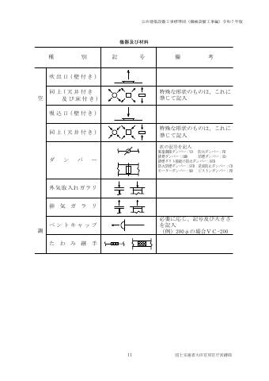

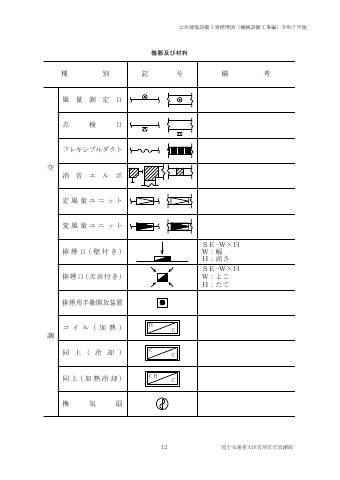

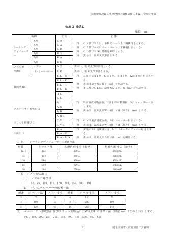

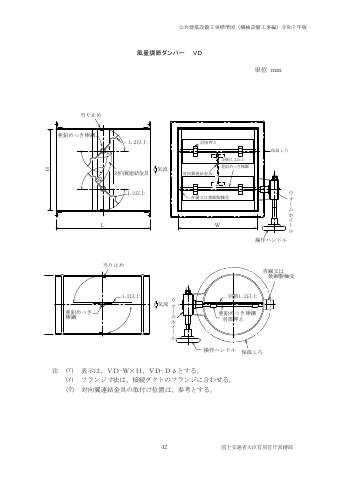

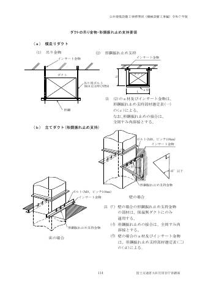


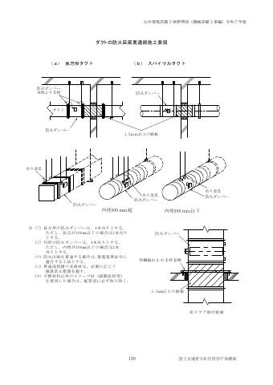

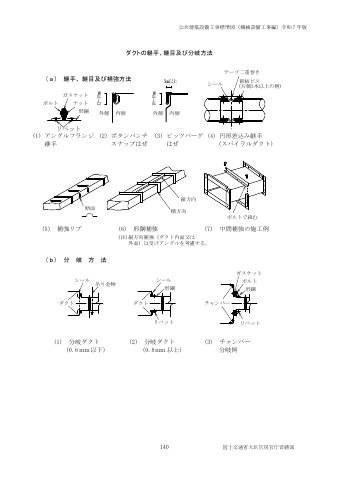

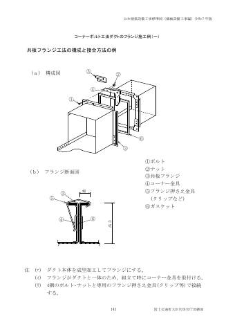

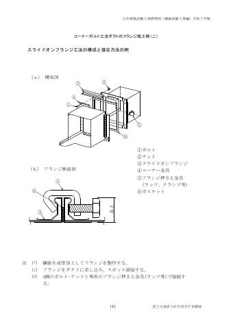

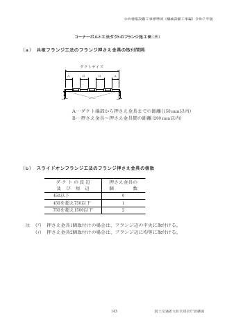

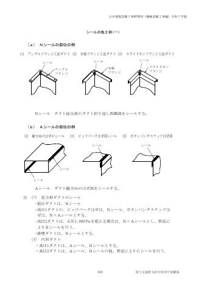

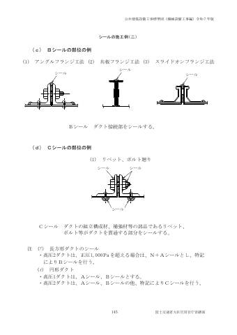

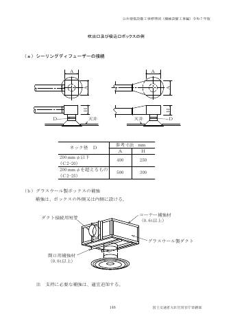

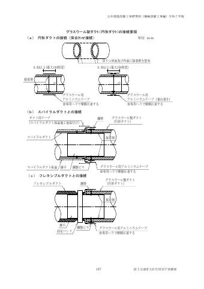